ainda em fontes
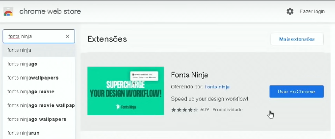Essa extensão é uma ferramenta que serve pra identifcar as fontes e cores que foi usada naquela fonte.
Sites para identificar fontes
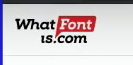Tudo da aula (Capítulo 14 Aula 09).
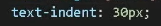texident faz aquele espaço no começo do texto o exemplo vai ficar logo a baixo.
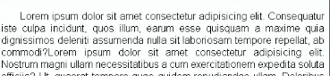Alinhamento de texto (Capítulo 14 Aula 10)
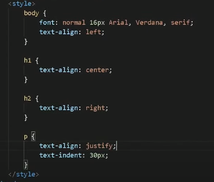Seletores Personalizados
Capítulo 15 Aula 01
Seletores são formas de diferencia e identificar as tegs ex:(Difenciar h1 do h1 do titulo do site)
Uma forma de personalizar configurações para determinados elementos.
exemplos em imagens abaixo.
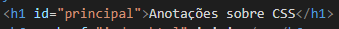Identifiquei meu H1 como "principal", porque quero que ele seja meu titulo principal da pagina
A imagem a cima resumidamente como faz pra identificar e depois chamar no CSS.
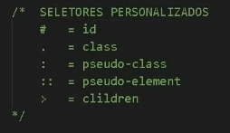No HTML "ID" e pra chamar no CSS é "#", e quando voce for colocar no HTML"class" voce chama no CSS "."(Ponto)
Eu não posso repetir o "ID" no mesmo documento, se eu usar, ele vai funcionar mas é ERRADO! , se eu quiser repetir eu uso o seletore "Class"
Em um documento de HTML só pode ter um elemento com "id", "id" é unico e "class" é multiplo.
Não classifique seu seletores pela forma e sim pela funcionalidade.
Se eu quiser colocar uma "class" em uma palavra dentro de um texto gigante eu evelopo e uso o "span" dessa forma eu consigo destacar tal palavra.
Eu tambem consigo aplicar mais de uma classe em um elemento, e como faço isso? simplis, coloca os dois nome dentro das "aspas" sem virgula nem nada como na imagem a baixo :D
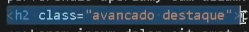Aqui temos a class "avancada" junto com a class "destaque"
E tambem podemos colocar junto com o seletor "id" com "class" como na imagem a baixo
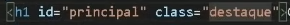Mas no CSS o "class" na parte visual tem herarquias e no caso o "class" vem antes do "id" mas se os 2 tiverem cores a que vai ficar e a do "id".
Capítulo 15 Aula 02
DIV
DIV são uns conteiners que é usado para separar e ajudar na parte de css
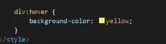Isso aqui faz uma ação de que, quando eu passar o mouse em cima da div, ela vai acender da cor amarela, ela vai mudar para essa cor
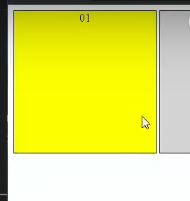desta forma que é usado a "hover" q significa passando o mouse por cima.
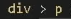Esse ">" singifica que é filho daquela classe, como esta no exemplo a cima.
Capítulo 15 Aula 03
Pseudo-elementos em CSS
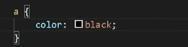Isso serve para configurar e personalizar a parte de links.